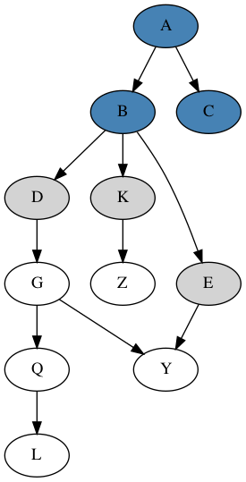
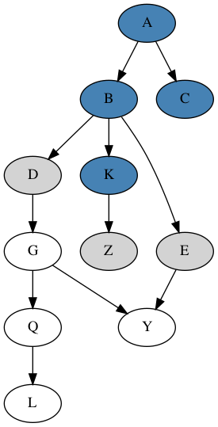
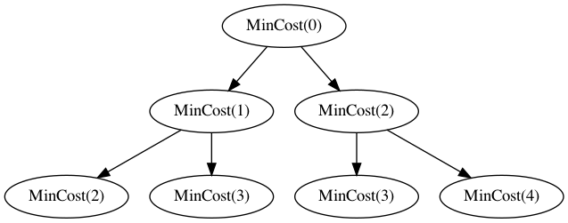
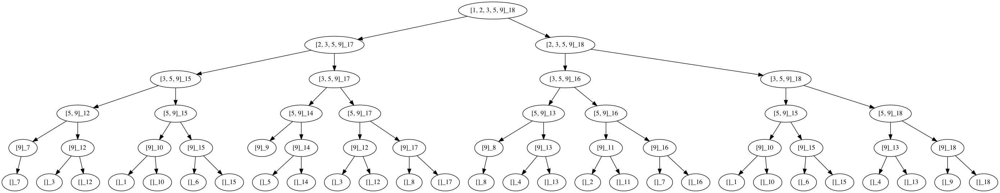
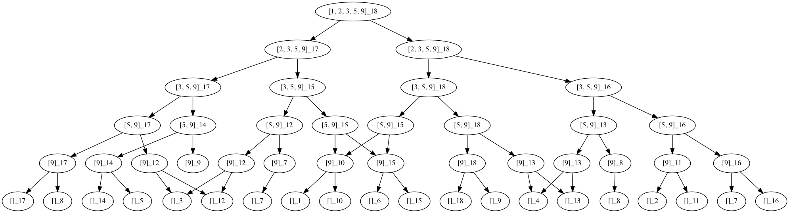
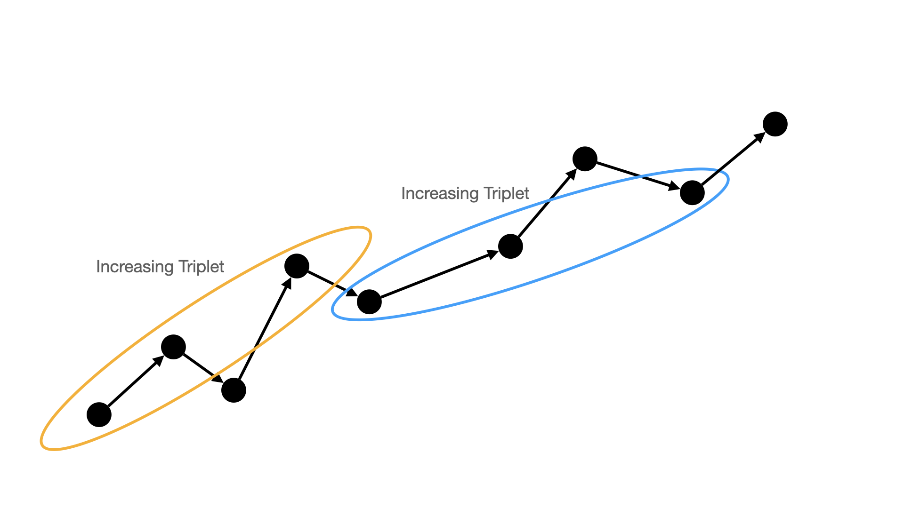
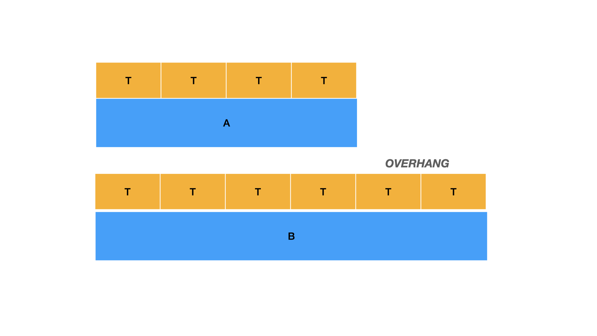

We can think about a general graph search algorithm as consisting of an visited set of nodes and a frontier set of nodes. The goal is to eventually have the visited set equal to all nodes in the graph. The frontier is a set of nodes that we maintain along the way. Initially, we set the frontier to the starting node of the graph. It is unexplored but currently on our list of nodes that need to be explored i.e. it is on the frontier. We then pick a new node from the frontier set, mark it as explored, and do any other work we might need to do, and then take all of its neighbors and add them to the frontier set. In summary, our model is as follows:
visited: Set of nodes we have seen i.e., marked as visitied.
frontier: Set of nodes that we know about and know are reachable, but have not yet visited.
We can view BFS and DFS searches as simply variants of this model in terms of how they select the next nodes to visit out of the current frontier set.
For example, consider two steps of a graph search progression, where blue nodes as visited and gray nodes as those in the frontier, and node K is the newly visited node below:


Depth-first search searches deeper in a graph before searching broader. Can do a basic recursive or iterative implementation. Iterative implementation uses a stack to keep track of the frontier nodes, so that we explore deeper nodes first. We can also implement depth first search in a way that lets us recover paths to a node, by storing parent pointers as we go.
Note that if we want to explore a tree, or, more generally, any acyclic graph, then we can use a depth first search without checking whether we have already seen a previously visited node. Since, there are no cycles, the worst that will happen is we may mark a node as visited multiple times, but we should never get into a nonterminating loop in the search.
Breadth-first search searches all closer nodes before searching farther nodes i.e. it progresses in “levels" of depth. Not a standard way to implement it recursively, but can use a queue to keep track of the frontier nodes.
Dijkstra’s algorithm is a way to find the shortest path between a source node and a target node in a graph. One way is to view this kind of shortest path algorithm is as a generalization of other search algorithms, particularly breadth first search. Essentially, we can augment the set of visited nodes with some auxiliary information to track the shortest path to these nodes as we go.
Note first that in the special case of unweighted graph edges, Dijstra’s algorithm behaves equivalently to breadth first search. That is, when we add newly discovered nodes to the frontier, we add them all to the end of a standard queue, since they all have equal distance (weight 1) from the current node. In weighted graphs, though, this does not hold, since some nodes may be reachable via lower-weight edges. So, to generalize this behavior to full Dijkstra, we maintain a priority queue for the frontier set, which is maintained in order of next shortest depth from source.
We can also think about each “level" in BFS vs. each “level" in Dijkstra. In BFS each level has the same depth from source, so can be interchanged, and will all have depth greater than other nodes in lower levels in the queue. In Dijkstra, nodes within the same “level" may not all have the same depth from source, but all nodes within the same level should have greater depth from source than earlier levels in the queue.
Also, note that there are a bunch of standard explanations of Dijkstra’s algorithm where you assume you know all nodes upfront, and initialize a "visited" distance array for every node. In practice, this is less realistic since you might not know all nodes of a graph you are exploring dynamically upfront, and, in general, there is no specific need for you to have to know all nodes upfront. You can easily just keep track of nodes distances as you add them into the frontier (priority queue) set. I find some standard explanations of Dijkstra’s algorithm more confusing for this reason, since updating nodes as you go helps make it clearer the basic underlying similarities between this approach and all other graph traversal algorithms.
There are 2 main components of a problem that make it amenable to a so-called “dynamic programming” (badly named) approach:
Optimal Substructure: A global solution can be described in terms of solutions to smaller “local” problems. In other words, it is possible to find a solution to a larger problem by solving smaller problems and combine them in an efficient way.
Overlapping Subproblems: The global problem can be broken down into smaller “local" sub-problems, and there is some overlap/redundancy between these subproblems, which is where you ideally get the efficiency speedup from.
Note that either (1) and (2), in isolation, don’t necessarily permit an efficient, dynamic programming based approach to a problem. For example, we can consider divide and conquer type approaches as satisfying the optimal substructure property, but don’t necessarily satisfy the overlapping subproblems property. For example, merge sort solves smaller subproblems (subsequences of an original list) and then merges them into a larger solution. But, in general, these smaller sorting problems cannot be expected to actually overlap at all.
Examples of problems with efficient DP approaches:
Fibonacci: Compute the \(n\)-th Fibonacci number.
Subset Sum: Given a set (multi-set) \(S\) of integers and a target sum \(k\), determine if there is a subset of \(X \subseteq S\) such that the sum of integers in \(X\) equals \(k\).
Knapsack: Given a set of \(n\) items, each with a weight \(w_i\) and values \(v_i\), find a subset of items that fits in a knapsack of capacity \(B\) and maximizes the overall value of included items.
Weighted Interval Scheduling: Given a set of intervals \((s_i,e_i, W_i)\) represent as start and end times \(s_i\) and \(e_i\), respectively, and weight \(W_i\), determine the maximum weight set of non-overlapping intervals.
Minimum Edit Distance: Given two strings \(S\) and \(T\) over some alphabet of characters \(\Sigma\), determine the minimum number of insertions or deletions needed to transform \(S\) to \(T\).
Matrix Chain Multiplication: Given a sequence of matrices, determine the most efficient order in which to multiple them
Can also look at some problems as having solution that can be built by a sequence of choices of which elements to add to the solution. This also allows for a more unified view in some cases between a greedy approach and a DP approach. For example, in the Subset Sum problem, we can imagine a strategy where we build a solution by picking new elements from the original set to add to our output solution. We might take some kind of greedy approach where we, for example, pick the next smallest value and add it to our output. Clearly, the issue with the greedy approach in this problem is that it can get “stuck”, with no next choices that allow the solution to be rectified, even if a solution does exist.
This is an example of a somewhat simpler DP problem but is good to practice the basics. We are given a staircase, which can be represented as simply a sequence of \(n\) steps, each with an associated cost. You can start at either the 0th or 1st step, and at each step you pay the cost of the current step and take either 1 or 2 steps up. Given these rules, you want to find the path up the stairs with minimal overall cost. This problem has a simple recursive breakdown that is simpler in character to other path finding problems, where the overall minimum cost solution can be represented in terms minimum cost solution to smaller paths of the original problem. Basically, if we say \(\mathit{MinCost}(i)\) is the minimum cost solution starting from step index \(i\), then we can represent this solution recursively as \[\begin{aligned} \mathit{MinCost}(i) = cost(i) + \mathit{Min}(\mathit{MinCost}(i+1), \mathit{MinCost}(i+2)) \end{aligned}\] while also accounting for the base case where \(i > n\), in which case this means we’ve reached the top and can return cost 0.
If we expand the above recursion naively, though, it will contain an exponential number of calls, though there are many shared subproblems, similar to Fibonacci.

One simple approach here is to memoize solutions as we go, avoiding the exponential work blowup.
To understand the idea behind approach for Subset Sum, can think about each element of the given list of \(n\) integers \(S=\{a_1,\dots,a_n\}\). If we wanted to come up with a naive recursive solution, we could imagine the decision tree for building all subsets of \(S\), where each branch point represents whether we include that element or not in the subset. This is one way to simply generate all possible subsets of a given set. Within this tree, though, at each node, we can imagine we are dealing with a subset of the original set, based on the subset (e.g. suffix) of elements that we have not made a choice about including or excluding. Along with this, we can imagine that each node of the tree also has associated with it the “remaining target” amount, which is the target minus the sum of elements included based on this decision path in the tree. Now, even though this tree naively has size (i.e, width) exponential in the number of elements, there are actually a limited number of unique problems to solve in this tree, so there is sufficient overlap between them to make this efficient.
The recursive formulation of subset sum can then be formulated as follows, where \(SS(i,T)\) represents the solution to subset sum for suffix \(S[i..]\) and target value \(T\): \[\begin{aligned} SS(i, T) = SS(i+1, T-S[i]) \vee SS(i+1, T) \end{aligned}\] representing the two possible decision branches (i.e. include element \(i\) or don’t include it). We can then compute this recursive formulation efficiently by caching/memoizing results to \(SS(i,T)\) subproblems as we go.
Note that many problems of this character can be computed in either a “top down” or “bottom up” fashion. In our recursive formulation, we are formulating this top-down, since we are starting with larger problems and breaking them down into smaller ones, and we can deal with overlapping subproblems by caching/memoizing as we go. In a bottom up approach, we can build a table of subproblems potentially starting with smaller ones first. For example, in the subset sum problem, we can build a \(n \times T\) table \(M\) where entry \(M[k][t]\) represents the solution to problem with target sum \(t\) and suffix \(S[k..]\) of elements starting from index \(k\) from the original array.
We know from our recursive formulation above that \[\begin{aligned} M[k][t] = M[k+1][t-S[k]] \vee M[k+1][t] \end{aligned}\] so we can use this to iteratively compute the entries in the table until we arrive at the solution to the top level problem.
Note, however, that in some cases computing such a table is actually be slightly wasteful/unnecessary, even if it may still have good asymptotic complexity. That is, when we go top down, we can typically compute exactly the tree of subproblems that are actually needed for solving the top level problem. When going bottom up in this tabular fashion, though, we may actually end up computing solutions to some additional, unused subproblems, that are technically never used to compute the overall solution.
For example, here is a full recursion/decision tree for a subset sum computed for \[S=\{1,2,3,5,9\},T=18\]

and then we can look at the same tree but with identical subproblem nodes merged into one, illustrating the redundancy in subproblems:

In a bottom up approach, we would, instead of generating the subproblems in this tree explicitly, just start at the “leaf" level of this tree, compute the answers to those subproblems, and then work our way up to the top, combining solutions to smaller subproblems as we go. Note, though, that in the bottom row, for example, we never encounter a \((\{9\},6)\) subproblem, even though it may be computed in the bottom up approach.
0-1 Knapsack is very similar to Subset Sum i.e., we have to determine if there exists a subset of \(n\) given items with corresponding weights and values \((w_i,v_i)\), that remains under our given capacity and maximizes the sum of the chosen item values. Indeed, we can think of Subset Sum as a special case of the knapsack problem, where the values and weights of each element are the same. As in Subset Sum case, we can imagine a solution search tree where we either include or exclude the first element, and the subproblems we recurse on are basically the rest of the elements with a capacity reduced by that of our first element, or the rest of the elements with the original capacity. Again, this tree might grow exponentially, but, if our capacity is \(C\), we actually only have at most \(C\) unique possible capacities, and at most \(n\) suffixes of elements. Note also that the minor difference from Subset Sum is that, when we combine solutions to recursive subproblems, we want to take the maximum solution (since this is an optimization problem variant), rather than just taking the disjunction. So, the recursive formulation is as follows \[\begin{aligned} &\textsc{Knapsack}(S,C,i) = \begin{cases} \textsc{Knapsack}(S,C, i-1) \text{ if } (C-w_i) \leq 0 \\ Max \begin{cases} v_1 + \textsc{Knapsack}(S,C-w_i,i-1) \text{ if } (C-w_i) > 0 \\ \textsc{Knapsack}(S,C,i-1) \\ \end{cases} \end{cases}\\ \end{aligned}\]
Problem: Given an array of size \(n\), find the length of the longest increasing subsequence i.e., the longest possible subsequence in which the elements of the subsequence are sorted in increasing order.
Solution Idea: If we consider any increasing subsequence, we can always naturally extend it with an earlier, smaller element in the array. So, if we have a longest possible subsequence for a suffix of our original array, we should be able to potentially extend it with with an earlier element that is smaller than the minimum element of this subsequence. (TODO: Think more about the above reasoning?)
Overall, one high-level, general approach to solving problems amenable to a dynamic programming can be viewed as follows:
Is it a decision or optimization problem?
Define the recursive formulation of the problem i.e., how you would define the solution to a larger problem in terms of smaller subproblems. (i.e. optimal substructure)
Identify any sharing between subproblems. (i.e. overlapping subproblems)
Decide on an implementation strategy: top-down or bottom up.
N.B. It is important to remember to first formulate the problem abstractly in terms of the inductive/recursive structure, then think about it in terms of how substructure is shared in a DAG, and only then worry about coding strategies.
Problem: Given an array of characters, compress the string by replacing repeated consecutvie characters by that character follower by the number of times it appears. Do this compression pass in place.
Solution Idea: Each string will get compressed into a string of size \(leq\) itself, so we can process character groups from left to right, recording the beginning and end of a consecutive character group, and its size. We can keep track of an index in the array of where to place the next compressed string, and move this along as we go overwriting lower parts of the array while continuing to process upper parts.
Problem: Given an array of integers, move all zeroes in the array to the end of the array, while maintaining the relative order of the non-zero elements.
Solution Idea: TODO. How to do this in-place, and with the optimal number of operations?
Problem: Given a string \(s\) and string \(t\), determine if \(s\) appears as a subsequence of \(t\).
Solution Idea: Idea is to scan forward in both strings, maintaining a current pointer in both. When characters match, you can move forward both poitners, and when they don’t match, you can move forward the pointer in \(t\) (we can assume \(t\) is longer than \(s\)). After we reach the end of \(t\) with the pointer, if \(s\) was truly a subsequence in \(t\), we should have matched it with its appropriate matching characters in \(t\). So, if the \(s\) pointer had not reached the end of \(s\) after we finish scanning \(t\), then such a subsequence must not have existed. Otherwise, if we scan past the end of \(s\), then we have found \(s\) as a valid subsequence in \(t\).
Problem: Given an array of integers, \(S\), compute an output array \(A\) such that \(A[i]\) is equal to the product of all integers in \(S\) excluding \(S[i]\).
Solution Idea: The naive solution is to go over every index \(i\) in \(S\) and compute the product of all other indices in \(S\) and set \(A[i]\) equal to this product. The downside is that this is not so efficient, since it takes \(O(n^2)\) time in the worst case, if \(n\) is the length of the input array \(S\). The key goal is to see if we can somehow do this more efficiently.
One way to think about this is to consider the multiplications we are doing in the brute force solution e.g. if we have an array \(S=\{1,2,3,4\}\) and we consider the multiplications being done at each index: \[\begin{aligned} i=0 : \, \, (\phantom{1 \cdot} 2 \cdot 3 \cdot 4) \\ i=1 : \, \, (1 \phantom{1 \cdot} \cdot 3 \cdot 4) \\ i=2 : \, \, (1 \cdot 2 \phantom{1 \cdot} \cdot 4) \\ i=3 : \, \, (1 \cdot 2 \cdot 3 \phantom{1 \cdot}) \end{aligned}\] It seems like we are doing some repeated work across this set of different multiplications. For example, the multiplication pair \(2 \cdot 3\) occurs at index \(0\) and index \(3\), and the pair \(1 \cdot 3\) occurs at indices \(1\) and \(3\). This would seem to imply that we only need to do these sub-multiplications once, and can then cache the results each time we need them.
More generally, we can actually observe that each index in the output array can be represented more succintly as a product of a prefix and suffix of the input array. And, each of these prefixes and suffixes are, then, naturally nested subproblems relative to each other, so if we compute the product of one prefix, we can compute the product of the next larger prefix without re-computing the whole prefix product from scratch. So, the essential idea is that if we can go through, in linear time, and compute these prefix and suffix products for each index of the input array, then we can go again and compute the values for each index of the output array with one scan, by simply multiplying the appropriate prefix and suffix product together.
| (prefix) \(\cdot\) (suffix) | |||||
|---|---|---|---|---|---|
| - | 2 | 3 | 4 | 5 | = \((2 \cdot 3 \cdot 4 \cdot 5)\) |
| 1 | - | 3 | 4 | 5 | = \((1) \cdot (3 \cdot 4 \cdot 5)\) |
| 1 | 2 | - | 4 | 5 | = \((1 \cdot 2) \cdot (4 \cdot 5)\) |
| 1 | 2 | 3 | - | 5 | = \((1 \cdot 2 \cdot 3) \cdot (5)\) |
| 1 | 2 | 3 | 4 | - | = \((1 \cdot 2 \cdot 3 \cdot 4)\) |
Problem: Given an integer array \(nums\), return true if there exists a triple of indices \(i,j,k\) such that \(i < j < k\) and \(nums[i] < nums[j] < nums[k]\).
Solution Idea: A brute force way to compute this would be to loop over all indices \(i\), and, for each, first search for \(j > i\) such that \(nums[j] > nums[i]\). If found, then start from \(j\) and search for \(k > j\) such that \(nums[k] > nums[j]\). Actually, what is the worst case running time of this solution? In the worst, case, I think this would be \(O(n^3)\), since for each index, we may need to search \(n\) other indices, and we are doing this both for \(j\) w.r.t \(i\) and \(k\) w.r.t \(j\), in the worst case.
Ok, note a key insight: for any valid increasing triplet subsequence, there must also be such a valid triplet that includes the smallest (and second smallest) element of the array. So, we can utilize this insight to maintain only a conservative lower bound for the possible triplet subsequences i.e., we really only need to maintain the two smallest elements in order to check for possible triplet subsequences. Essentially, checking for a triplet subsequence with some \(i,j,k\) for which there exists an \(i' < i\) s.t. \(nums[i'] < nums[i]\) is actually wasteful, if we’ve already checked it for \((i',j,k)\).
Ohter Notes: Think about how this problem relates to the more general problem of finding the longest increasing subsequence in such an array.

Problem: Given two integer arrays \(S_1\) and \(S_2\), return sets \(U_1,U_2\) where \(U_1\) is the set of distinct integers in \(S_1\) and not in \(S_2\), and \(U_2\) is the set of distinct integers in \(S_2\) and not in \(S_1\).
Problem: Given two strings \(s_1\) and \(s_2\), merge them into one string \(S\) such that the output string \(S\) interleaves the characters of \(s_1\) and \(s_2\) alternately. If one string is longer than the other, then we append the remaining characters of that string to the end of the output string.
Problem: Given two strings \(s\) and \(t\), we say that \(t\) “divides” \(s\) if \(s = t + t + \dots + t\). That is, \(s\) consists of \(t\) concateneated with itself 1 or more times. Given two strings \(s_1\) and \(s_2\), we want to find the greatest common divisor \(x\) between \(s_1\) and \(s_2\). That is, the largest string \(x\) such that \(x\) divides \(s_1\) and \(s_2\).
Solution Idea: An insightful way to look at this problem is to view it as a variant of Euclid’s algorithm for computing the GCD of two numbers. It is helpful to understand the underlying principle that Euclid’s algorithm is based on. Namely, that if you have two numbers \(A\) and \(B\), and \(B > A\), then if we consider the "overhang" of \(B\) with respect to \(A\), then the common factors between \(A\) and \(B\) must be the same as those between \(A\) and this “overhang”. This is essentially the basis of Euclid’s algorithm i.e. we then reduce the problem by looking for greatest common divisors between \(B\) and the “overhang”, and continue this process.

We can apply a very similar idea to this string based problem. We can think of strings as potentially constructed of smaller atomic “factors", as numbers are, but with one difference, which is that they are not necessarily built up from concatenations of uniform atomic units, as numbers are inherently required to be. So, for example, if we applied Euclid’s algorithm naively to a case like \[\begin{aligned} A &= ABAB \\ B &= ABCCAB \end{aligned}\] we might take the overhang \(B\) as \(AB\) and then go forward comparing it again to \(A=ABAB\), and end up where we think their greatest common divisor is \(AB\). But, this is clearly wrong since \(B\) is not actually composed of concatenations of \(AB\). We can work around this by checking, when we take the overhang value, if the remaining section of \(B\) is actually composed of the same factors as the overhang. For example consider this other example: \[\begin{aligned} A &= AB \\ B &= ABABABAB \end{aligned}\] The overhang of \(B\) is \(ABABAB\), \(B\) is not a concatenation of, but the overhang is a concatenation of the remaining prefix of \(B\).
TODO: Clarify this explanation a bit more crisply.
Problem: Given two strings \(s_1\) and \(s_2\), we have to determine if these strings are “close”. Closeness is defined as whether \(s_1\) can be transformed into \(s_2\) by 2 possible types of operations:
\(Op_1\), any two characters of \(s_1\) can be swapped in position.
\(Op_2\), any two character types in \(s_1\) can be replaced swapped with each other e.g. in \(aabbb\), we can swap \(a \leftrightarrow b\) to get \(bbaaa\).
Solution Idea: The essential idea here is to observe a few key facts about the conditions under which operations can be performed to transform strings into one another.
First, if strings are not the same length, then one can’t be transformed into the other, since no operations change the length of a string.
Then, we can see if they have the exact same set and count of characters. If they do, then they can easily be transformed merely by sequence of \(Op_1\) operations, since we only need to re-arrange characters.
Next, we can see if their character sets (not necessarily counts) are the same. If they aren’t, then again, there is no possible way to transform one string into the other, since no operations actually change the character set of a string.
If the character sets are the same and the overall set of character counts is also the same, then this means we can similarly swap characters via \(Op_2\) in some sequence to get matching character sets and counts, from which point we can then just apply a further sequence of \(Op_1\).
Problem: Given array of kids with some number of candies, and number of extra candides, compute whehter each kid would have max candies after receiving the number of extra candies you have.
Problem: Given a set of \(k\) linked lists, each which are individually sorted in ascending order, merge all \(k\) lists into one sorted list.
Solution Idea: The basic approach is to essentially just perform the merge step of merge-sort. That is, if we are given a set of already sorted lists, we can merge them all into one sorted lists by repeatedly popping the smallest element from the remaining, non-empty lists and appending it to the output list.
Key Concepts:
Mergesort Merging
Linked List Manipulation
The essence of the solution is very straightforward as long as you know and understand the ideas behind mergesort i.e. knowing the core idea that you can merge a set of already sorted lists by incrementally choosing the smallest element from each.
Problem: Given a sorted linked list, remove any duplicates from the list.
Solution Idea: Iterate through the linked list, but at each node look ahead to see how many nodes in front of you contain an identical value to your own. Update your current “next" pointer to point to the first node after this block of identical nodes in front of you. Since the list is sorted, you know that any duplicates of the current value must be directly in front of you.
Key Concepts:
Linked List Traversal
Linked List Deletion
Duplicate Detection by Sorting
The underlying insight in the solution is to recognize that sorting a list can be used an easy mechanism for detecting duplicates. That is, in a sorted list, all duplicates of a particular item will always appear in contiguous “blocks". Once you recognize this fact, then implementing the solution mostly requires a standard application of linked list iteration and linked list item deletion. Namely, that to delete an item \(n_2\) from a linked list that appears in a list as \(n1 \rightarrow n_2 \rightarrow n_3\), you simply update the “next" pointer of \(n_1\) to point to \(n_3\) instead of \(n_2\). Recall that a basic linked list node is a \(LinkedListNode(val, next)\) structure, where \(val\) is the value of that node, and \(next\) is a pointer to the next item in the list.
Problem: Given two singly linked lists, return the node at which the two lists intersect. If they have no intersection, then return null.
Solution Idea: This is similar to a lowest common ancestor problem. One approach is to walk backwards to the root from one of the lists and keep track of all nodes seen along the way. Then, walk backwards from the other list and check for the first node you hit that was already seen, and that node should be the intersection point. Note that this uses \(O(n)\) space, if \(n\) the upper bound on the size of the linked lists.
It’s also possible to do it without using any extra space by using a cleverer 2 pointer approach with a bit of counting. If we walk back to the root in both lists we can record the longer of the two. Then, from this we know the difference in length between the two lists, \(diff\). So, we can walk backwards by \(diff\) pointers in the longer list, and then walk forwards from there in both lists at the same time, until we hit a point where both pointers are pointing to the same node.
Key Concepts:
Linked List Traversal
Lowest Common Ancestor (?)
Problem: Given a singly linked list, reverse the list.
Solution Idea: Iterate over the list and at each node, re-arrange the next pointer so it now points to the previous node rather than the next node. \[\begin{aligned} None \rightarrow a \rightarrow b \rightarrow c \end{aligned}\] If \(curr=a\) and \(curr.next = b\), then to do the reversal we want to end up with \(a.next = None\) and then step forward, ending up with \(curr=b\). So, at each step of the traversal, we keep track of hte previous item we looked at, so that we can reverse the pointer of the current node to point to it. We also need to save a reference to the next node before we update it.
Key Concepts:
Linked List Traversal
Pointer Swapping (?)
Need to have a solid grasp of how to traverse a linked list, but also need to have good confidence in how to update points in a few steps (similar to how we swap variables), without overwriting the info we need to continue.